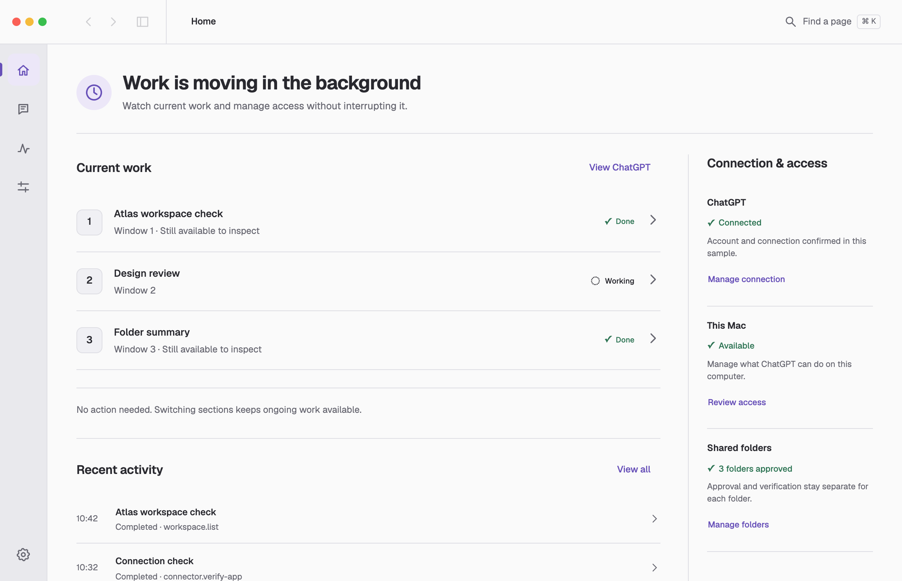
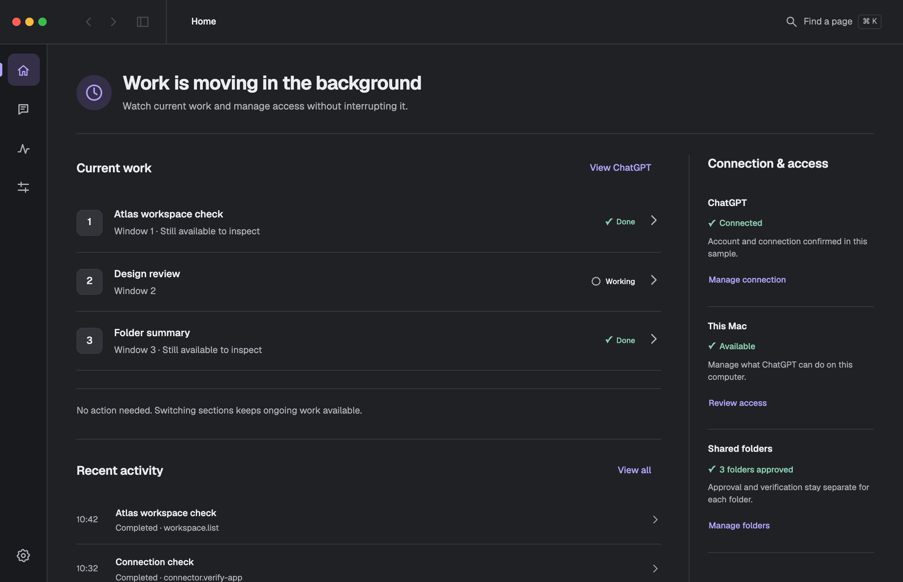
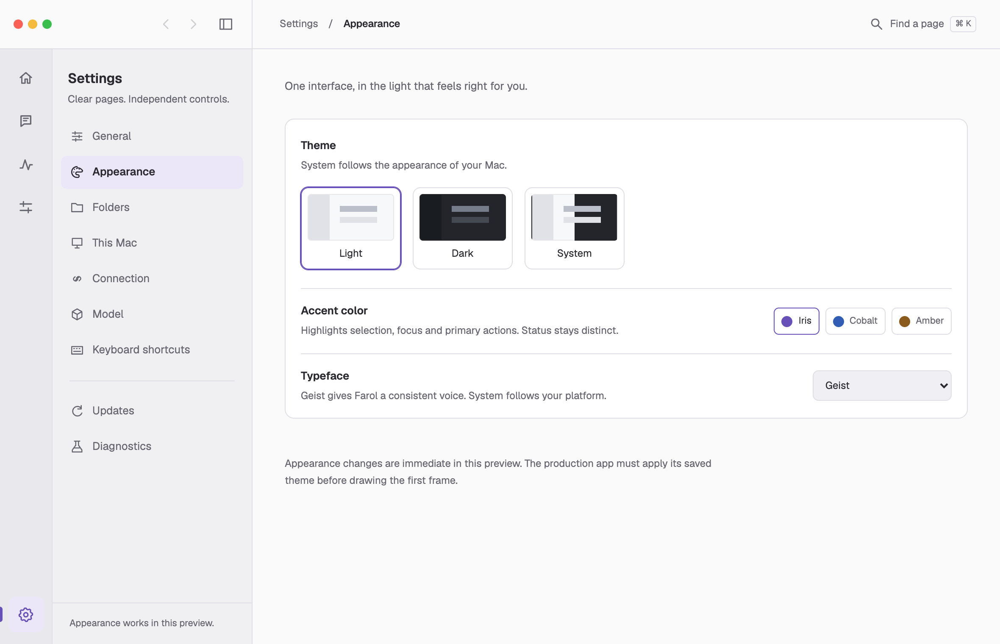
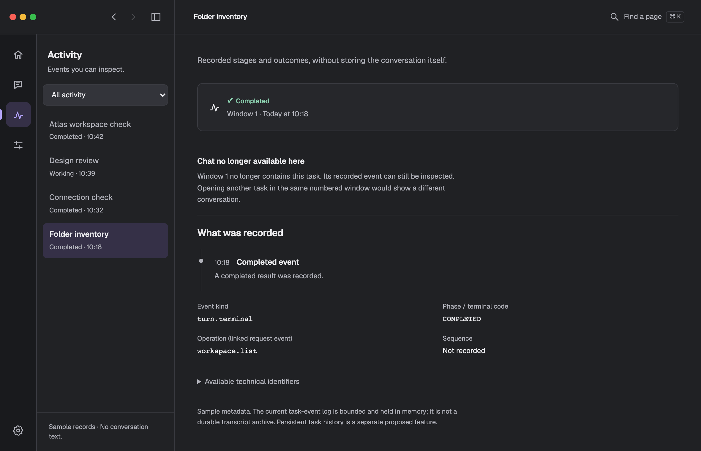
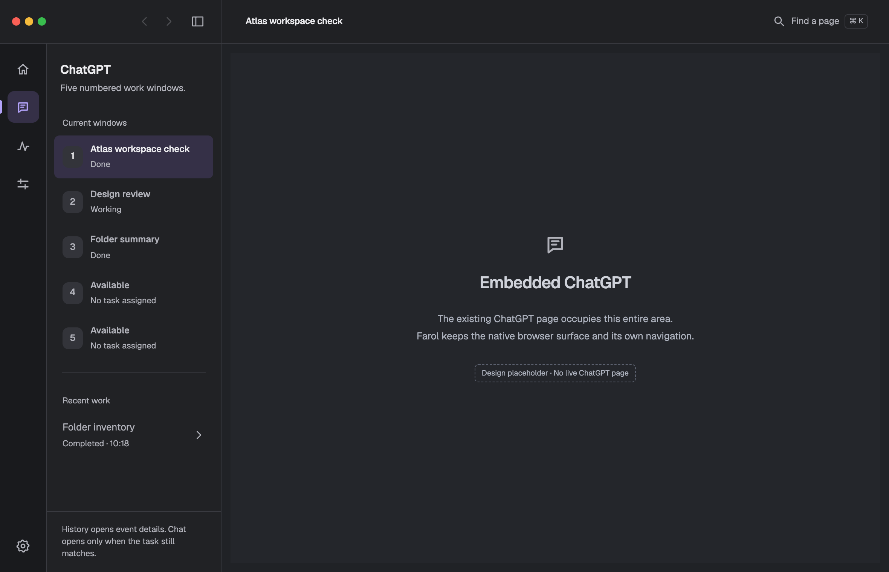
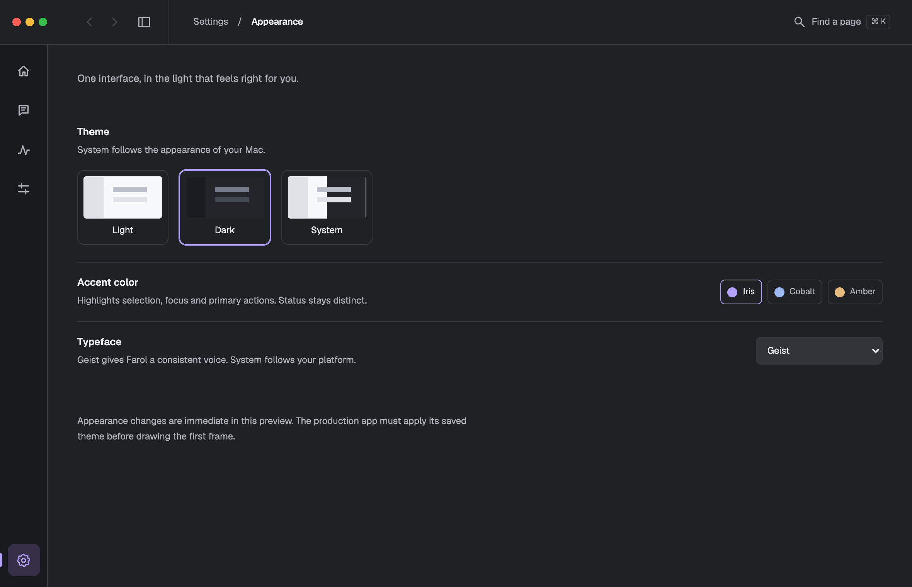
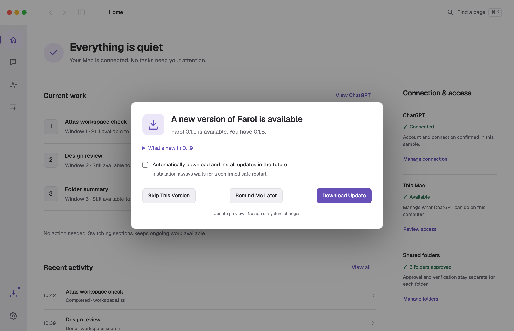
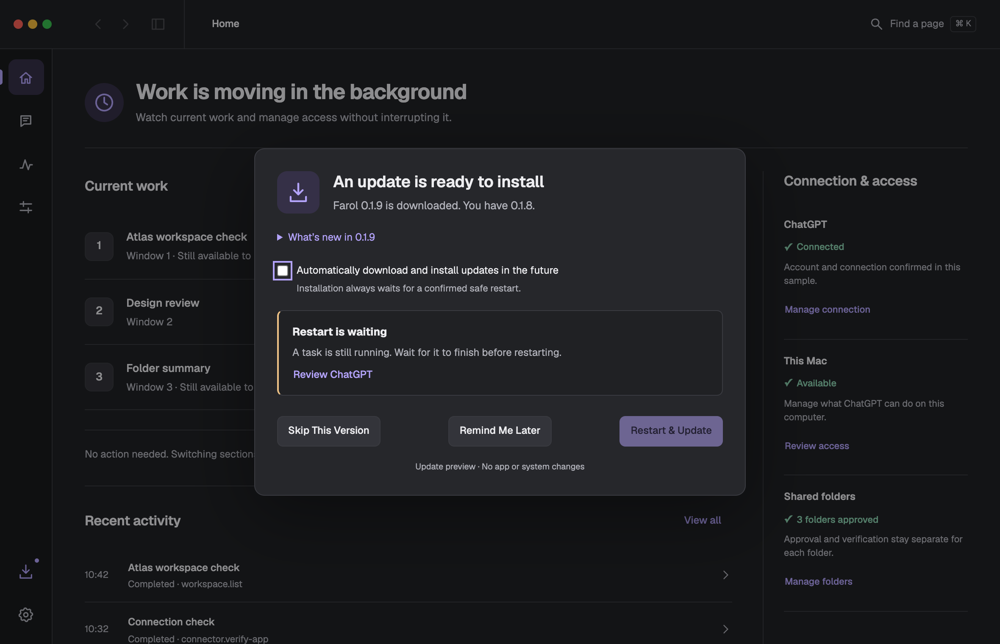
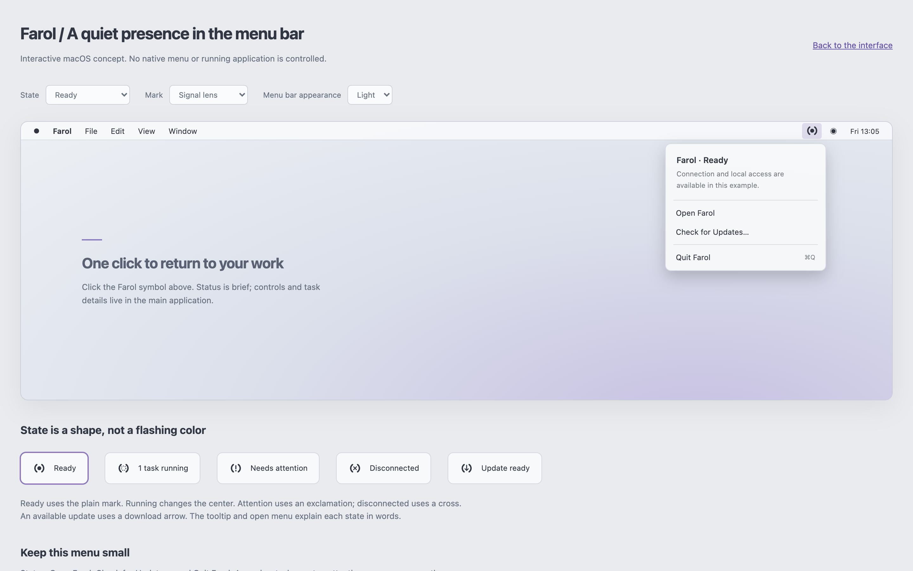
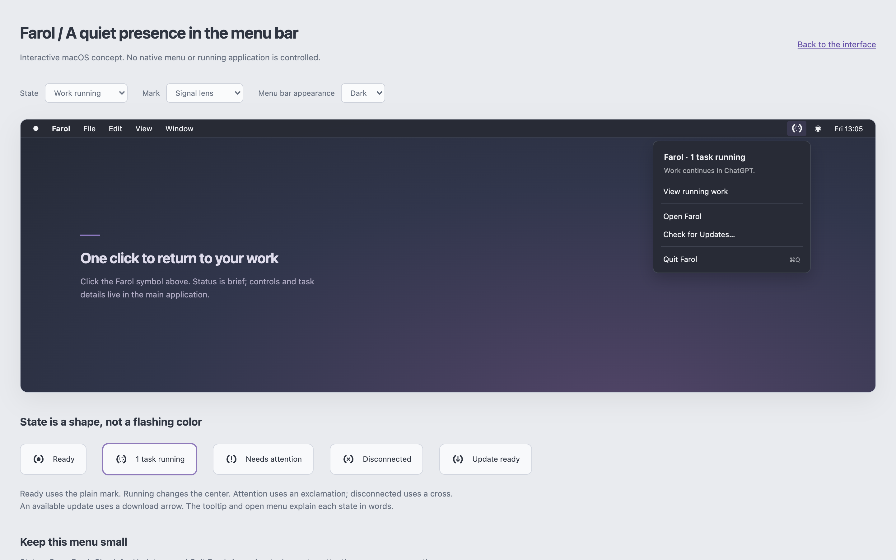

Light / Home
Current work, connection and recent activity. Home is the first rail item.
One toolbar. Home first. Iris as the starting accent. Synthetic data.

Current work, connection and recent activity. Home is the first rail item.

The same information and hierarchy, with restrained Iris selection.

Navigation, sidebar collapse, active page and search share one upper bar.

The selected event is the title. No repeated Activity prefix or second page heading.

The actual ChatGPT page will occupy the content surface; this is a labeled placeholder.

Collapse the contextual list from the toolbar; the page title remains visible.

Version comparison, release notes, an opt-in preference, Skip and Later.

A named reason and a relevant destination replace an unsafe restart action.

A monochrome symbol and a brief menu: Open Farol, Check for Updates and Quit.

A task count links back to the main application. No second Settings interface.
Interactive links show design examples only. Downloads, installation, restart, native menus and live ChatGPT are not connected. Automatic update preferences, version skipping and reminder scheduling are proposed additions to the existing updater.
Updated 2 October 2026. Earlier explorations remain available: revision 2 and revision 1. Implementation contract and verification notes.